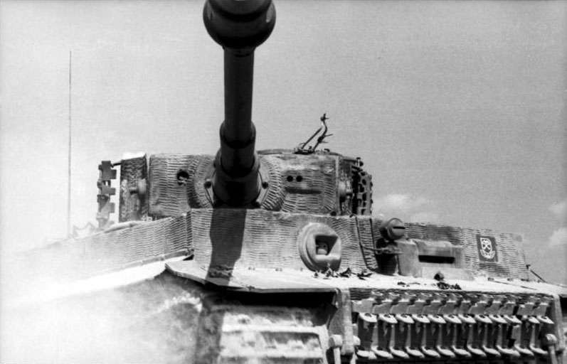
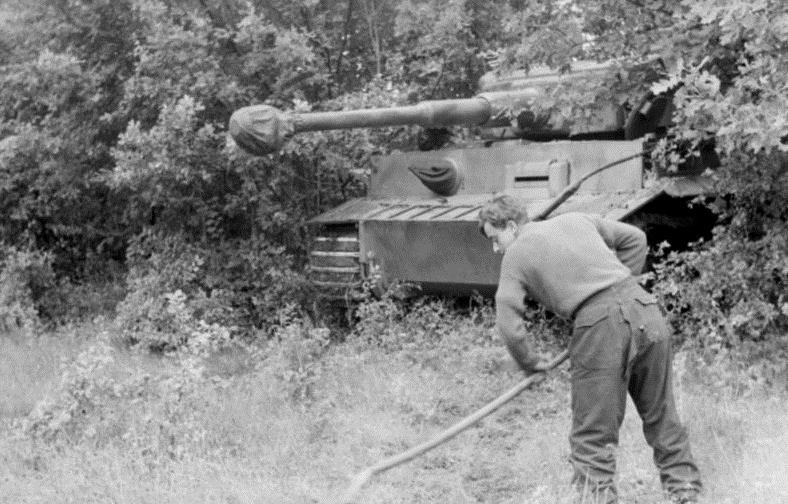

The Tiger I was a German heavy tank of World War II that operated beginning in 1942 in Africa and in the Soviet Union, usually in independent heavy tank battalions. It gave the German Army its first armoured fighting vehicle that mounted the 8.8 cm KwK 36 gun (derived from the 8.8 cm Flak 36). 1,347 were built between August 1942 and August 1944. After August 1944, production of the Tiger I was phased out in favour of the Tiger II.
While the Tiger I has been called an outstanding design for its time, it has also been called over-engineered, using expensive materials and labour-intensive production methods. In the early period Tiger was prone to certain types of track failures and breakdowns and was in general limited in range by its high fuel consumption. It was expensive to maintain, but generally mechanically reliable. It was difficult to transport and vulnerable to immobilisation when mud, ice, and snow froze between its overlapping and interleaved Schachtellaufwerk-pattern road wheels, often jamming them solid. This was a problem on the Eastern Front in the muddy rasputitsa season and during periods of extreme cold.
The tank was given its nickname "Tiger" by Ferdinand Porsche, and the Roman numeral was added after the Tiger II entered production. The initial designation was Panzerkampfwagen VI Ausführung H (literally "armoured combat vehicle VI version H", abbreviated PzKpfw VI Ausf. H) where 'H' denoted Henschel as the designer/manufacturer. It was classified with ordnance inventory designation Sd.Kfz. 182. The tank was later re-designated as PzKpfw VI Ausf. E in March 1943, with ordnance inventory designation Sd.Kfz. 181.
Today, only seven Tiger I tanks survive in museums and private collections worldwide. As of 2021, Tiger 131 (captured during the North Africa Campaign) at the UK's Tank Museum is the only example restored to running order.

The Tiger differed from earlier German tanks principally in its design philosophy. Its predecessors balanced mobility, armour and firepower and were sometimes outgunned by their opponents.
While heavy, this tank was not slower than the best of its opponents. However, at over 50 tonnes dead weight, the suspension, gearboxes, and other such items had clearly reached their design limits and breakdowns were frequent if regular maintenance was not undertaken.
Although the general design and layout were broadly similar to the previous medium tank, the Panzer IV, the Tiger weighed more than twice as much. This was due to its substantially thicker armour, the larger main gun, greater volume of fuel and ammunition storage, larger engine, and a more solidly built transmission and suspension.
The Tiger I had frontal hull armour 100 mm (3.9 in) thick, frontal turret of 100 mm (3.9 in) and gun mantlet with a varying thickness of 120 mm (4.7 in) to 200 mm (7.9 in). The Tiger had 60 mm (2.4 in) thick hull side plates and 80 mm armour on the side superstructure/sponsons, while turret sides and rear were 80 mm. The top and bottom armour was 25 mm (1 in) thick; from March 1944, the turret roof was thickened to 40 mm (1.6 in). Armour plates were mostly flat, with interlocking construction. This flat construction encouraged angling the Tiger hull roughly 30-45° when firing in order to increase effective thickness. The armour joints were of high quality, being stepped and welded rather than riveted, and were made of maraging steel. The Tiger 1s armor overall was of the highest quality available for production to Henschel and Germany at the time.
The 56-calibre long 8.8 cm KwK 36 was chosen for the Tiger. A combination of a flat trajectory from the high muzzle velocity and precision from Leitz Turmzielfernrohr TZF 9b sight (later replaced by the monocular TZF 9c) made it very accurate. In British wartime firing trials, five successive hits were scored on a 410 by 460 mm (16 by 18 in) target at a range of 1,100 metres (3,600 ft). Compared with the other contemporary German tank guns, the 8.8 cm KwK 36 had superior penetration to the 7.5 cm KwK 40 on the Sturmgeschütz III and Panzer IV but inferior to the 7.5 cm KwK 42 on the Panther tank under ranges of 2,500 metres. At greater ranges, the 8.8 cm KwK 36 was superior in penetration and accuracy. The gun took around 10.9 seconds to reload.
The ammunition for the Tiger had electrically fired primers. Four types of ammunition were available but not all were fully available; the PzGr 40 shell used tungsten, which was in short supply as the war progressed.
PzGr. 39 (armour-piercing, capped, ballistic cap)
PzGr. 40 (armour-piercing, composite rigid)
Hl. Gr. 39 (high explosive anti-tank)
sch. Sprgr. Patr. L/4.5 (incendiary shrapnel)
The rear of the tank held an engine compartment flanked by two separate rear compartments each containing a fuel tank and radiator. The Germans had not developed an adequate diesel engine, so a petrol (gasoline) powerplant had to be used instead. The original engine utilised was a 21.35-litre (1303 cu.in.) 12-cylinder Maybach HL210 P45 developing 485 kW (650 hp) at 3,000 rpm. Although a good engine, it was underpowered for the vehicle. From the 251st Tiger onwards, it was replaced by the upgraded HL 230 P45, a 23.095 litre (1409 cu.in.) engine developing 521 kW (700 hp) at 3,000 rpm. The main difference between these engines was that the original Maybach HL 210 used an aluminium engine block while the Maybach HL 230 used a cast-iron engine block. The cast-iron block allowed for larger cylinders (and thus, greater displacement) which increased the power output to 521 kW (700 hp). The engine was in V-form, with two cylinder banks set at 60 degrees. An inertia starter was mounted on its right side, driven via chain gears through a port in the rear wall. The engine could be lifted out through a hatch on the rear hull roof. In comparison to other V12 and various vee-form gasoline engines used for tanks, the eventual HL 230 engine was nearly four litres smaller in displacement than the Allied British Rolls-Royce Meteor V12 AFV powerplant, itself adapted from the RR Merlin but de-rated to 448 kW (600 hp) power output; and the American Ford-designed precursor V12 to its Ford GAA V-8 AFV engine of 18 litre displacement, which in its original V12 form would have had the same 27 litre displacement as the Meteor.
The 501st Heavy Panzer Battalion (sPzAbt 501) reported in May 1943:
…Regarding the overheating engines, the HL 210 engine caused no troubles during the recent time. All occurring breakdowns resulted from the low quality of driver training. In several cases engine failures have to be put down to the missing remote engine thermometer. Five engines have reached more than 3,000km without essential failures. A good driver is essential for the successful deployment of the Tiger, he must have a good technical training and has to keep his nerve in critical situations…
The engine drove the front sprockets through a drivetrain connecting to a transmission in the front portion of the lower hull; the front sprockets had to be mounted relatively low as a result. The Krupp-designed 11-tonne turret had a hydraulic motor whose pump was powered by mechanical drive from the engine. A full rotation took about a minute.
Another new feature was the Maybach-Olvar hydraulically controlled semi-automatic pre-selector gearbox. The extreme weight of the tank also required a new steering system. Germany's Argus Motoren, where Hermann Klaue had invented a ring brake in 1940, supplied them for the Arado Ar 96 and also supplied the 55 cm disc. Klaue acknowledged in the patent application that he had merely improved on existing technology, that can be traced back to British designs dating to 1904. It is unclear whether Klaue's patent ring brake was utilised in the Tiger brake design.
The clutch-and-brake system, typical for lighter vehicles, was retained only for emergencies. Normally, steering depended on a double differential, Henschel's development of the British Merritt-Brown system first encountered in the Churchill tank. The vehicle had an eight-speed gearbox, and the steering offered two fixed radii of turns on each gear, thus the Tiger had sixteen different radii of turn. In first gear, at a speed of a few km/h, the minimal turning radius was 3.44 m (11 ft 3 in). In neutral gear, the tracks could be turned in opposite directions, so the Tiger I pivoted in place. There was a steering wheel instead of either a tiller — or, as most tanks had at that time, twin braking levers — making the Tiger I's steering system easy to use, and ahead of its time.
Powered turret traverse was provided by the variable speed Boehringer-Sturm L4 hydraulic motor, which was driven from the main engine by a secondary drive shaft. On early production versions of the Tiger maximum turret traverse was limited to 6º/second, whilst on later versions a selectable high speed traverse gear was added. Thus the turret could be rotated 360 degrees at up to 6º/second in low gear independent of engine rpm (same as on early production versions), or up to 19º/second with the high speed setting and engine at 2000 rpm, and at over 36º/second at the maximum allowable engine speed of 3000 rpm. The direction and speed of traverse was controlled by the gunner through foot pedals, the speed of traverse corresponding to the level of depression the gunner applied to the foot pedal. This system allowed for very precise control of powered traverse, a light touch on the pedal resulting in a minimum traverse speed of 0.1 deg/sec (360 degrees in 60 min), unlike in most other tanks of the time (e.g. US M4 Sherman or Soviet T-34) this allowed for fine laying of the gun without the gunner needing to use his traverse handwheel.

A report prepared by the Waffenamt-Prüfwesen 1 gave the calculated probability of perforation at range, on which various adversaries would be defeated reliably at a side angle of 30 degrees to the incoming round.
The Wa Pruef report estimated that the Tiger's 88 mm gun would be capable of penetrating the differential case of an American M4 Sherman from 2,100 m (1.3 mi) and the turret front from 1,800 m (1.1 mi), but the Tiger's 88 mm gun would not penetrate the upper glacis plate at any range assuming a side angle of 30 deg. The M4 Sherman's 75 mm gun would not penetrate the Tiger frontally at any range, and needed to be within 100 m to achieve a side penetration against the 80 mm upper hull superstructure. The Sherman's upgraded 76 mm gun might penetrate the Tiger's driver's front plate from 600 m, the nose from 400 m and the turret front from 700 m. The M3 90 mm cannon used as a towed anti-aircraft and anti-tank gun, and later mounted in the M36 tank destroyer and finally the late-war M26 Pershing, could penetrate the Tiger's front plate at a range of 1,000 m using standard ammunition, and from beyond 2,000 m when using HVAP.
Soviet ground trial testing conducted in May 1943 determined that the 8.8 cm KwK 36 gun could pierce the T-34/76 frontal beam nose from 1500 m, and the front hull from 1500 m. A hit to the driver's hatch would force it to collapse inwards and break apart. According to the Wa Prüf 1 report, the Soviet T-34-85's upper glacis and turret front armour would be defeated between 100 and 1,400 m (0.062 and 0.870 mi) at a side angle of 30 deg, while the T-34's 85 mm gun was estimated to penetrate the front of a Tiger between 200 and 500 m (0.12 and 0.31 mi) at a side angle of 30 degrees to the incoming round.[58] Soviet testing showed that the 85 mm gun could penetrate the front of a Tiger from 1,000 m (0.62 mi) with no side angle.
At a side impact angle of 30 deg the 120 mm hull armour of the Soviet IS-2 model 1943 would be defeated between 100 and 300 m (0.062 and 0.186 mi) at the driver's front plate and nose. The IS-2's 122 mm gun could penetrate the Tiger's front armour from between 1,500 and 2,500 m (0.93 and 1.55 mi), depending on the impact angle. However, according to Steven Zaloga, the IS-2 and Tiger I could each knock the other out in normal combat distances below 1,000 m. At longer ranges, the performance of each respective tank against each other was dependent on the crew and the combat situation.
The British Churchill Mk IV was vulnerable to the Tiger from the front at between 1,100 and 1,700 m (0.68 and 1.06 mi) at a 30 deg side angle, its strongest point being the nose and its weakest the turret. According to an STT document dated April 1944, it was estimated that the British 17-pounder, as used on the Sherman Firefly, firing its normal APCBC ammunition, would penetrate the turret front and driver's visor plate of the Tiger out to 1,900 yards (1,700 m).
When engaging targets, Tiger crews were encouraged to angle the hull to the 10:30 or 1:30 clock position (45 degrees) relative to the target, an orientation referred to as the Mahlzeit Stellung. This would maximize the effective front hull armour to 180mm and side hull to 140mm, making the Tiger impervious to any Allied gun up to 152 mm. The Tiger's lack of slope for its armour made angling the hull by manual means simple and effective, and unlike the lighter Panzer IV and Panther tanks, the Tiger's thick side armour gave a degree of confidence of immunity from flank attacks. The tank was also immune to Soviet anti-tank rifle fire to the sides and rear. Its large calibre 8.8 cm provided superior fragmentation and high explosive content over the 7.5 cm KwK 42 gun. Therefore, comparing the Tiger with the Panther, for supporting the infantry and destroying fortifications, the Tiger offered superior firepower. It was also key to dealing with towed anti-tank guns, according to German tank commander Otto Carius:
The destruction of an antitank gun was often accepted as nothing special by lay people and soldiers from other branches. Only the destruction of other tanks counted as a success. On the other hand, antitank guns counted twice as much to the experienced tanker. They were much more dangerous to us. The antitank cannon waited in ambush, well camouflaged, and magnificently set up in the terrain. Because of that, it was very difficult to identify. It was also very difficult to hit because of its low height. Usually, we didn't make out the antitank guns until they had fired the first shot. We were often hit right away, if the antitank crew was on top of things, because we had run into a wall of antitank guns. It was then advisable to keep as cool as possible and take care of the enemy, before the second aimed shot was fired.
— Otto Carius (translated by Robert J. Edwards), Tigers in the Mud
Eager to make use of the powerful new weapon, Hitler ordered the vehicle be pressed into service months earlier than had been planned. A platoon of four Tigers went into action on 23 September 1942 near Leningrad. Operating in swampy, forested terrain, their movement was largely confined to roads and tracks, making defence against them far easier. Many of these early models were plagued by problems with the transmission, which had difficulty handling the great weight of the vehicle if pushed too hard. It took time for drivers to learn how to avoid overtaxing the engine and transmission, and many broke down. The most significant event from this engagement was that one of the Tigers became stuck in swampy ground and had to be abandoned. Captured largely intact, it enabled the Soviets to study the design and prepare countermeasures.
The 503rd Heavy Panzer Battalion was deployed to the Don Front in the autumn of 1942, but arrived too late to participate in Operation Winter Storm, the attempt to relieve Stalingrad. It was subsequently engaged in heavy defensive fighting in the Rostov-on-Don and adjacent sectors in January and February 1943.
In the North African Campaign, the Tiger I first saw action during the Tunisian Campaign on 1 December 1942 east of Tebourba, when three Tigers attacked an olive grove 5 km west of Djedeida. The thick olive grove made visibility very limited and enemy tanks were engaged at close range. The Tigers were hit by a number of M3 Lee tanks firing at a range of 80 to 100 metres. Two of the Lees were knocked out in this action. The Tiger tanks proved that they had excellent protection from enemy fire; this greatly increased the crews' trust in the quality of the armour. The first loss to an Allied gun was on 20 January 1943 near Robaa, when a battery of the British 72nd Anti-Tank Regiment knocked out a Tiger with their 6-pounder (57 mm) anti-tank guns. Seven Tigers were immobilised by mines during the failed attack on Béja during Operation Ochsenkopf at the end of February.
In July 1943, two heavy tank battalions (503rd and 505th) took part in Operation Citadel resulting in the Battle of Kursk with one battalion each on the northern (505th) and southern (503rd) flanks of the Kursk salient the operation was designed to encircle. However, the operation failed and the Germans were again put on the defensive. The resulting withdrawal led to the loss of many broken-down Tigers which were left un-recovered with battalions unable to do required maintenance or repairs.
On 11 April 1945, a Tiger I destroyed three M4 Sherman tanks and an armoured car advancing on a road. On 12 April 1945, a Tiger I (F02) destroyed two Comet tanks, one half-track and one scout car. This Tiger I was destroyed by a Comet tank of A Squadron of the 3rd Royal Tank Regiment on the next day without infantry support.